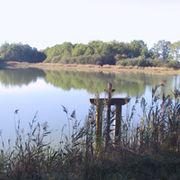
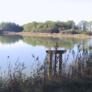
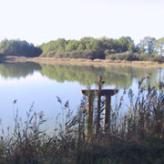

La France métropolitaine bénéficie d'une grande variété de paysages: champs agricoles ou boisés, chaînes de montagnes plus ou moins érodées, bord de mer divers et vallées mêlées à des espaces néo-naturels. Outre-mer, la France possède également une biodiversité importante (par exemple dans les forêts équatoriales franco-guyaniennes ou dans les lagons de Nouvelle-Calédonie). [15] La France est l'un des pays les plus boisés d'Europe occidentale, avec des forêts occupant 28% de la surface du pays.

Voulez-vous une carrière dans le tourisme?
Si vous êtes plein d'énergie, vous êtes un bon communicateur et persuasif, alors vous êtes définitivement ce que nous recherchons!
L'expérience est un avantage, mais nous partons du principe que personne n'est né et que l'homme vit en train d'apprendre.
Nous apprécions les personnes avec:
Nouvelles idées, visions originales
Bonnes compétences sociales
Orientation client
Maîtrise d'au moins une langue étrangère
Excellentes compétences en communication et pouvoir de persuasion
Intention de devenir professionnel en tourisme, qualification et formation continue
Nous attendons votre CV à l'adresse suivante: join_us@goldtour.ro et nous vous contacterons dès que possible.


 
